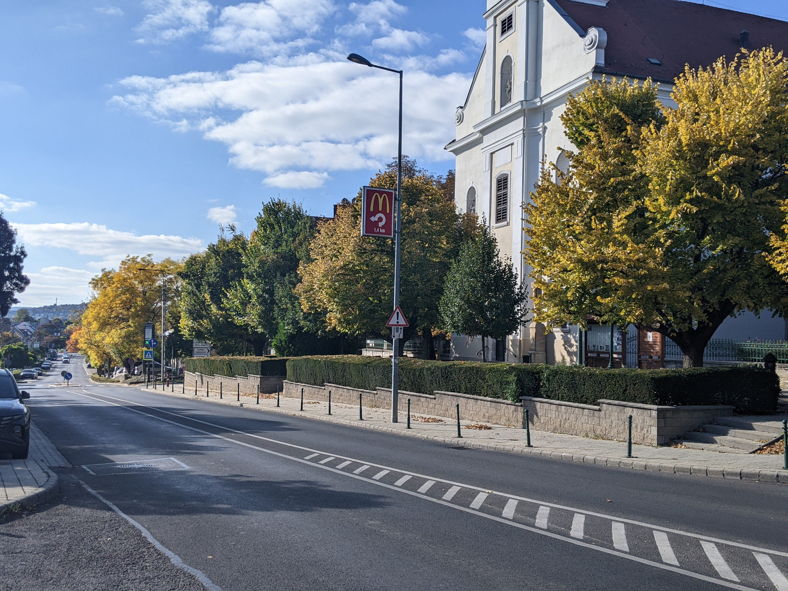
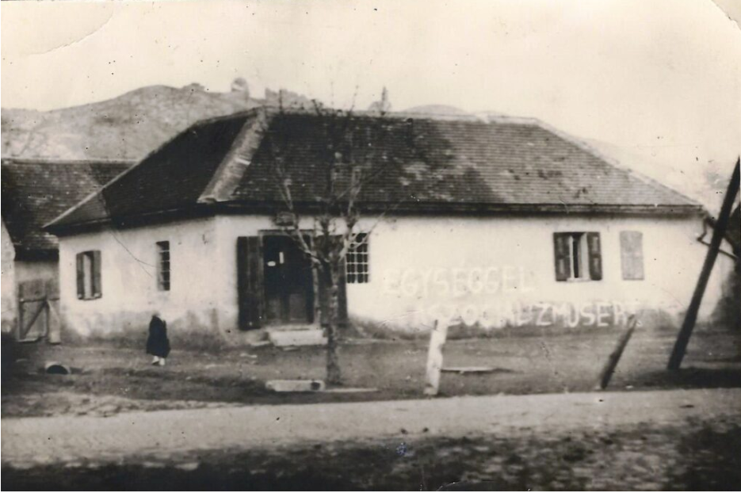
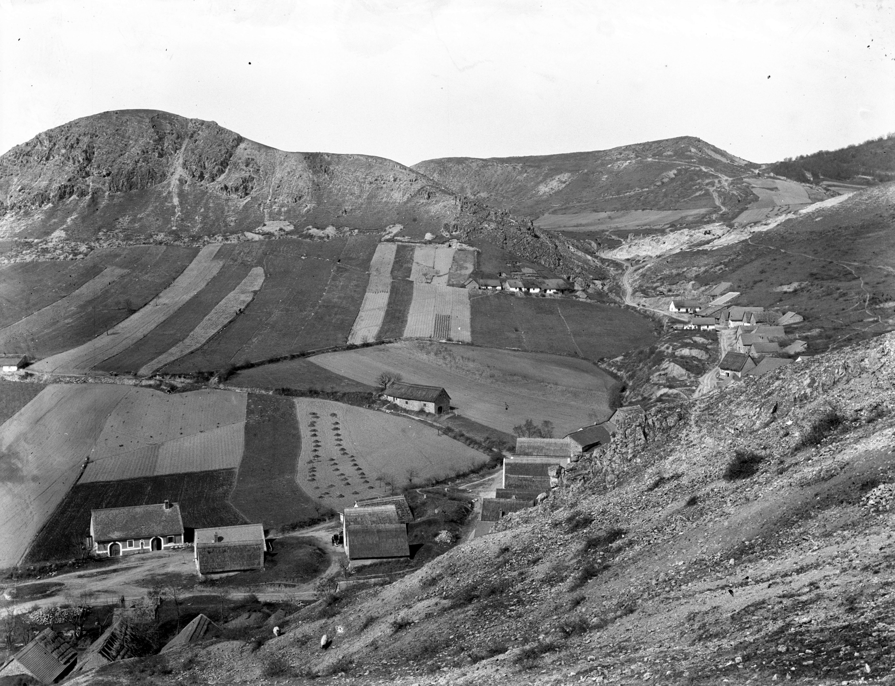
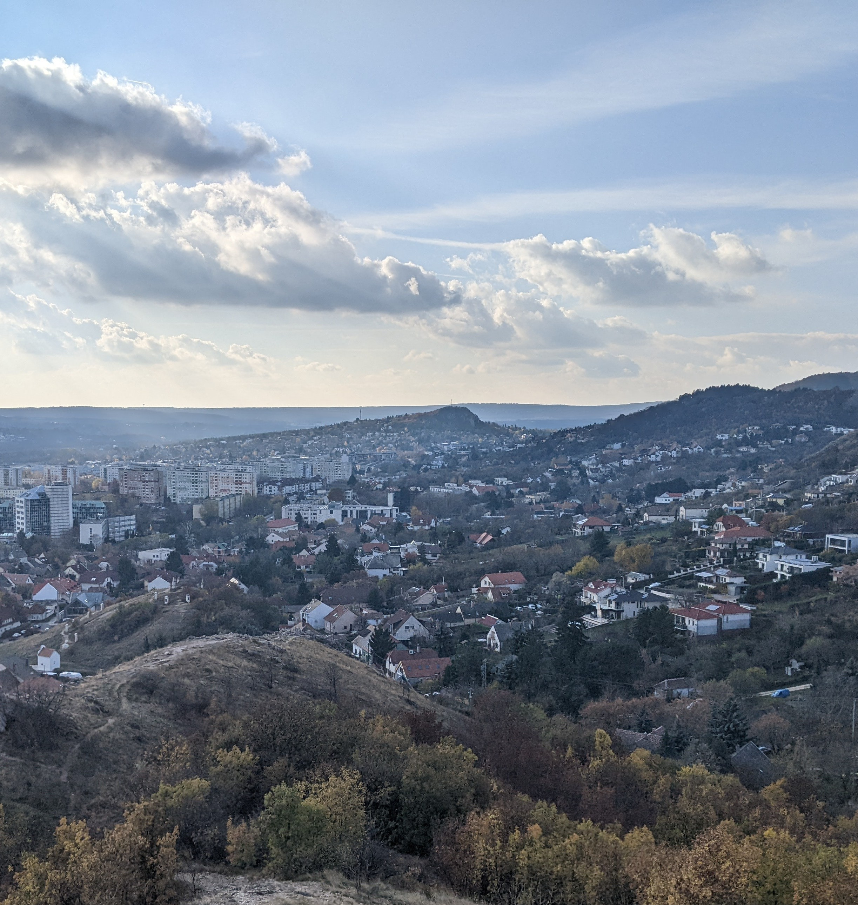

Templom tér


1926-2025
Fortepan / Sütő János
Szabadság út
1930-2025
Fortepan / Sütő János
Szabadság út 46., Rózsakert étterem
1972-2025
Fortepan / Bauer Sándor
Szabadság út 84


1919 körül-2025
1900 előtt-2025
Fortepan / SZTFH Földtani Szolgálatának gyűjteménye / Eötvös Loránd
Kő-hegy
1900 előtt-2025
Fortepan / SZTFH Földtani Szolgálatának gyűjteménye / Eötvös Loránd
kilátás a Kő-hegyről, szemben jobbra a mai Kőhalom utca


1900 előtt-2025
Fortepan / SZTFH Földtani Szolgálatának gyűjteménye / Eötvös Loránd
Kilátás a Kő-hegyről, a távolban a Törökugrató


1900 előtt-2025
Fortepan / SZTFH Földtani Szolgálatának gyűjteménye / Eötvös Loránd
Kilátás a Kő-hegyről
1900 előtt-2025
Fortepan / SZTFH Földtani Szolgálatának gyűjteménye / Eötvös Loránd
Kőhegyi kápolna
1929-2025
Fortepan / Schermann Ákos / Schermann Szilárd
A Vasvári Pál és Stefánia utca sarkán
1931-2025
Budapest School Budaörs
a XIX. században-2025
Budapest School
2016-2025